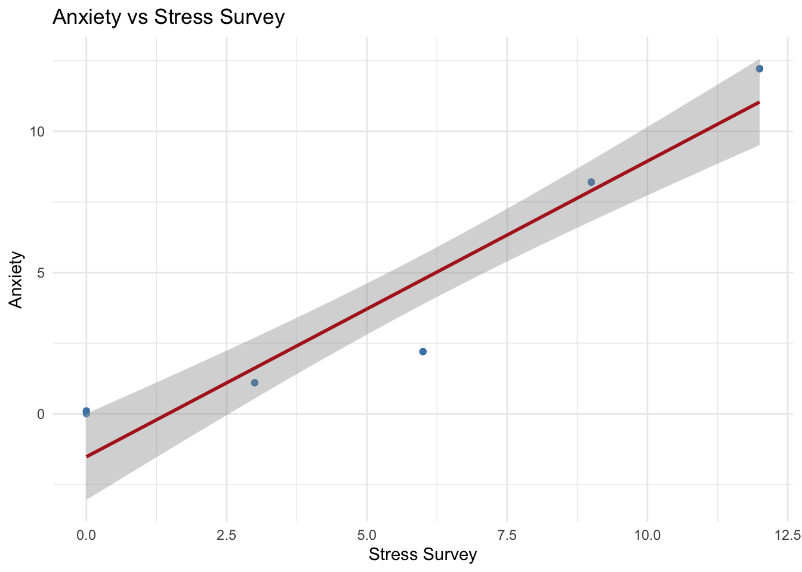
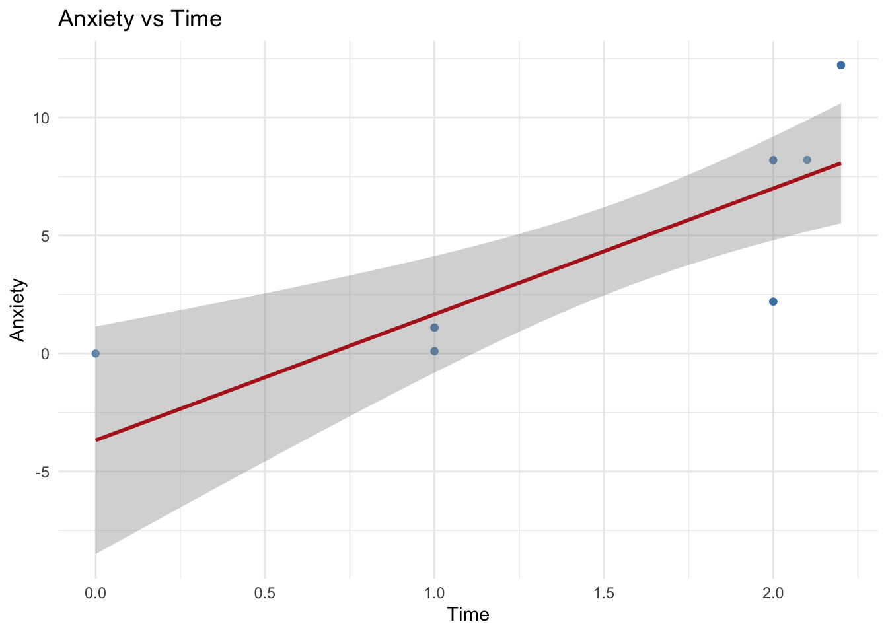

Garbage Can Regression Challenge
1 Garbage Can Regression Challenge
1.1 Executive Summary
This report analyzes the relationship between Anxiety, Stress/StressSurvey, and Time using bivariate and multiple linear regression. We compare competing specifications, visualize fitted relationships with confidence intervals, and examine robustness using influence diagnostics and subset analyses (low vs high stress). Key findings highlight how measurement error and model specification affect inference.
Choose R or Python and delete the other code chunk.
1.2 R Code
1.3 Your Analysis
Follow the challenge instructions from your course to complete your analysis. Questions to Answer for 75% Grade on Challenge:
- Bivariate regression Analysis with StressSurvey: Run a bivariate regression of Anxiety on StressSurvey. What are the estimated coefficients? How do they compare to the true relationship?
Call:
lm(formula = Anxiety ~ StressSurvey, data = observDF)
Residuals:
Min 1Q Median 3Q Max
-2.558 -0.517 0.301 1.180 1.624
Coefficients:
Estimate Std. Error t value Pr(>|t|)
(Intercept) -1.5240 0.7069 -2.156 0.0504 .
StressSurvey 1.0470 0.0962 10.883 6.68e-08 ***
---
Signif. codes: 0 '***' 0.001 '**' 0.01 '*' 0.05 '.' 0.1 ' ' 1
Residual standard error: 1.581 on 13 degrees of freedom
Multiple R-squared: 0.9011, Adjusted R-squared: 0.8935
F-statistic: 118.4 on 1 and 13 DF, p-value: 6.681e-08The estimated coefficient for StressSurvey is 1.047, which is close to the true relationship of 1.
- Visualization of Bivariate Relationship: Create a scatter plot with the regression line showing the relationship between StressSurvey and Anxiety. Comment on the fit and any potential issues.

The regression seems to follow to overall pattern of the points but leave out some outliers.
- Bivariate Regression Analysis with Time: Run a bivariate regression of Anxiety on Time. What are the estimated coefficients? How do they compare to the true relationship?
Call:
lm(formula = Anxiety ~ Time, data = observDF)
Residuals:
Min 1Q Median 3Q Max
-4.8010 -1.5605 -0.5605 2.4395 4.1508
Coefficients:
Estimate Std. Error t value Pr(>|t|)
(Intercept) -3.680 2.233 -1.648 0.12330
Time 5.341 1.305 4.093 0.00127 **
---
Signif. codes: 0 '***' 0.001 '**' 0.01 '*' 0.05 '.' 0.1 ' ' 1
Residual standard error: 3.323 on 13 degrees of freedom
Multiple R-squared: 0.563, Adjusted R-squared: 0.5294
F-statistic: 16.75 on 1 and 13 DF, p-value: 0.00127The estimated coefficient for Time is 5.341, which is far off from the true relationship of 0.1.
- Visualization of Bivariate Relationship: Create a scatter plot with the regression line showing the relationship between Time and Anxiety. Comment on the fit and any potential issues.

The regression seems to follow to overall pattern of the points but leaves out some outliers. The gray area shows the confidence interval range with 95% confidence. The graph with anxiety and time seems to have a larger area of confidence compared to stress survey meaning that it isn’t as confident in predicting anxiety as the first graph was.
- Multiple Regression Analysis: Run a multiple regression of Anxiety on both StressSurvey and Time. What are the estimated coefficients? How do they compare to the true relationship?
Call:
lm(formula = Anxiety ~ StressSurvey + Time, data = observDF)
Residuals:
Min 1Q Median 3Q Max
-1.3904 -0.9896 0.3288 0.6240 2.2912
Coefficients:
Estimate Std. Error t value Pr(>|t|)
(Intercept) 0.5888 1.0339 0.569 0.5795
StressSurvey 1.4269 0.1722 8.287 2.62e-06 ***
Time -2.7799 1.1111 -2.502 0.0278 *
---
Signif. codes: 0 '***' 0.001 '**' 0.01 '*' 0.05 '.' 0.1 ' ' 1
Residual standard error: 1.334 on 12 degrees of freedom
Multiple R-squared: 0.935, Adjusted R-squared: 0.9242
F-statistic: 86.32 on 2 and 12 DF, p-value: 7.538e-08The estimated coefficient for StressSurvey is 1.4269, which is 0.4 off from the true relationship of 1. The estimated coefficient for Time is -2.7799, which is far off from the true relationship of 0.1.
Questions to Answer for 85% Grade on Challenge:
- Multiple Regression Analysis: Run a multiple regression of Anxiety on both Stress and Time. What are the estimated coefficients? How do they compare to the true relationship?
Call:
lm(formula = Anxiety ~ Stress + Time, data = observDF)
Residuals:
Min 1Q Median 3Q Max
-1.330e-15 -4.027e-16 2.604e-16 4.822e-16 8.124e-16
Coefficients:
Estimate Std. Error t value Pr(>|t|)
(Intercept) 9.173e-16 5.371e-16 1.708e+00 0.113
Stress 1.000e+00 6.067e-17 1.648e+16 <2e-16 ***
Time 1.000e-01 4.273e-16 2.340e+14 <2e-16 ***
---
Signif. codes: 0 '***' 0.001 '**' 0.01 '*' 0.05 '.' 0.1 ' ' 1
Residual standard error: 7.268e-16 on 12 degrees of freedom
Multiple R-squared: 1, Adjusted R-squared: 1
F-statistic: 3.109e+32 on 2 and 12 DF, p-value: < 2.2e-16The estimated coefficient for Stress is 1, which is the exact value of the true relationship. The estimated coefficient for Time is 0.1, which is the exact value of the true relationship.
- Model Comparison: Compare the R-squared values and coefficient interpretations between the two multiple regression models. Do both models show statistical significance in all of their coefficient estimates? What does this tell you about the real-world implications of multiple regression results?
R-squared values:
For StressSurvey + Time: 0.935 For Stress + Time: 1.0
Coefficient values:
For StressSurvey + Time: 1.4269, -2.7799 For Stress + Time: 1, 0.1
P-Value:
For StressSurvey + Time: 7.538e-08 For Stress + Time: 2.2 e-16
The model with Stress + Time has an R-squared value of 1, meaning that the model is a perfect fit. This is quite suspicious, since no model is a perfect fit. Stress + Time also has a coefficient value equal to the true relationship, which goes in line with the 1.0 R-squared value. This leads me to believe that the model with Stress + Time is unreliable because it is “too good ot be true”. In addition, both models show statistical significance in all of thier coefficient estimates since the p-value for both models is less than .05.
Questions to Answer for 95% Grade on Challenge:
- Reflect on Real-World Implications: For each of the two multiple regression models, assume their respective outputs/conclusions were published in academic journals and then subsequently picked up by the popular press. What headline about time spent on social media and its effect on anxiety would you expect to see from a popular press outlet covering the second model? Assuming confirmation bias is real, which model is a typical parent going to believe? Which model will Facebook, Instagram, and TikTok executives prefer?
I would expect to see from the popular press a title similar to: “Research Shows That Time on Social Media Has a Direct Relationship with Anxiety and Stress!” Or even claiming that stress + time on social media causes anxiety.
Assuming confirmation bias is real, a typical parent is going to believe the second model since a typical parents already has a stigma on social media being bad.
Facebook, Instagram, and TikTok executives prefer the first multiple regression model since it shows that time on social media actually decreases anxiety, because the model had a negative estimated coefficient for time.
Questions to Answer for 100% Grade on Challenge:
- Avoiding Misleading Statistical Significance: Reflect on this tip to avoid being misled by statistically significant results: splitting the sample into meaningful subsets (“statistical regimes”), and using graphical diagnostics for linearity rather than blind reliance on “canned” regressions. Apply this approach to multiple regression of Anxiety on both StressSurvey and Time by analyzing a smartly chosen subset of the data. What specific subset did you choose and why? Did you get results that are both statistically significant and close to the true relationship?
Low Stress group (<= median) summary:
Call:
lm(formula = Anxiety ~ StressSurvey + Time, data = low_stress_df)
Residuals:
Min 1Q Median 3Q Max
-1.253e-16 -1.667e-17 8.333e-18 8.333e-18 1.253e-16
Coefficients:
Estimate Std. Error t value Pr(>|t|)
(Intercept) 3.701e-17 5.871e-17 6.300e-01 0.552
StressSurvey 3.333e-01 2.021e-17 1.649e+16 <2e-16 ***
Time 1.000e-01 7.877e-17 1.270e+15 <2e-16 ***
---
Signif. codes: 0 '***' 0.001 '**' 0.01 '*' 0.05 '.' 0.1 ' ' 1
Residual standard error: 7.426e-17 on 6 degrees of freedom
Multiple R-squared: 1, Adjusted R-squared: 1
F-statistic: 6.198e+32 on 2 and 6 DF, p-value: < 2.2e-16
High Stress group (> median) summary:
Call:
lm(formula = Anxiety ~ StressSurvey + Time, data = high_stress_df)
Residuals:
1 2 3 4 5 6
9.341e-16 -9.341e-16 -9.910e-30 -2.956e-31 -2.956e-31 -2.956e-31
Coefficients:
Estimate Std. Error t value Pr(>|t|)
(Intercept) -4.000e+00 1.449e-14 -2.760e+14 <2e-16 ***
StressSurvey 1.333e+00 5.589e-16 2.385e+15 <2e-16 ***
Time 1.000e-01 9.341e-15 1.071e+13 <2e-16 ***
---
Signif. codes: 0 '***' 0.001 '**' 0.01 '*' 0.05 '.' 0.1 ' ' 1
Residual standard error: 7.627e-16 on 3 degrees of freedom
Multiple R-squared: 1, Adjusted R-squared: 1
F-statistic: 2.08e+31 on 2 and 3 DF, p-value: < 2.2e-16# A tibble: 2 × 7
group r.squared adj.r.squared sigma df df.residual p.value
<chr> <dbl> <dbl> <dbl> <dbl> <int> <dbl>
1 Low Stress (<= me… 1 1 7.43e-17 2 6 1.13e-97
2 High Stress (> me… 1 1 7.63e-16 2 3 1.94e-47# A tibble: 6 × 6
group term estimate std.error statistic p.value
<chr> <chr> <dbl> <dbl> <dbl> <dbl>
1 Low Stress (<= median) (Intercept) 3.70e-17 5.87e-17 6.30e- 1 5.52e- 1
2 Low Stress (<= median) StressSurvey 3.33e- 1 2.02e-17 1.65e+16 3.35e-96
3 Low Stress (<= median) Time 1 e- 1 7.88e-17 1.27e+15 1.61e-89
4 High Stress (> median) (Intercept) -4.00e+ 0 1.45e-14 -2.76e+14 1.05e-43
5 High Stress (> median) StressSurvey 1.33e+ 0 5.59e-16 2.39e+15 1.62e-46
6 High Stress (> median) Time 1.00e- 1 9.34e-15 1.07e+13 1.80e-39The subset that I chose was splitting stress into two catergories: low and high stress using the median as the divider. I chose this because I felt like it would give a more accurate model and “balance” the results. Time in relation with low and high stress were the same as before with having the same estimate as the true relationship. However, the relationship with Stresssurvey with low and high stress changed slightly. In addition, the results all had lower than .05 p-value making them all statistically significant.